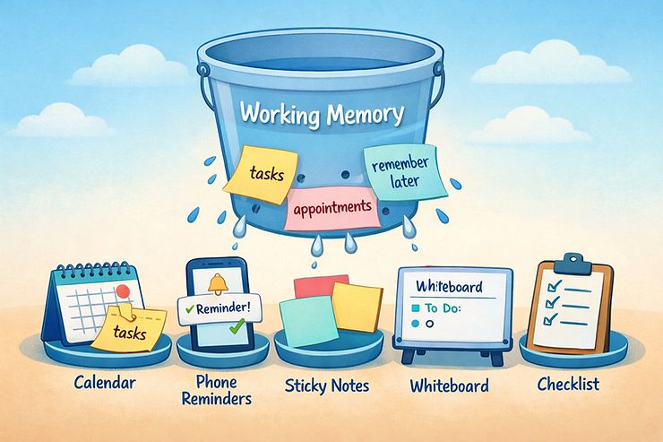

For those of us living with ADHD, forgetting is probably one of the things we beat ourselves up about the most. We forget appointments we genuinely cared about. We forget tasks we absolutely intended to do. We forget things five minutes after reminding ourselves not to forget them.
And somewhere along the way, we may have absorbed the idea that this means something about us. We start to believe that we are careless. unreliable, or that if we just tried harder, this would not keep happening.
Let’s be very clear right out of the gate. ADHD forgetfulness is not a personal failure. It is a neurological difference interacting with unrealistic expectations. And the shame that often follows is not helping our memory. It is actively making it worse.
This article is about understanding why ADHD memory works the way it does, letting go of the shame narrative, and learning how to build supports that actually fit our brains.
How ADHD affects memory and executive functioning
ADHD and working memory explained in plain language
When people talk about memory problems, they often mean long-term memory. Names, facts, past events. Many people with ADHD actually have strong long-term memory, especially for things tied to emotion or interest.
The real challenge with ADHD is working memory.
Working memory is the mental space that holds information briefly while you use it. It is what helps you remember what you were just thinking about, what step comes next, or what you planned to do after finishing the current task.
Examples of working memory in daily life include:
- Remembering why we walked into a room
- Holding a thought while someone else is talking
- Keeping track of multiple steps in a task
- Remembering to do something later without an external reminder
- Remembering where we put that thing that we specifically put someplace that we thought would be obvious next time we needed it.
In ADHD, this system is less reliable. Not absent. Just inconsistent.
Executive dysfunction and the leaky bucket metaphor
Imagine your working memory as a bucket you carry with you all day.
Some people have buckets with solid sides. ADHD brains tend to have buckets with holes. You can pour effort, intention, and reminders into the bucket, but information still leaks out. Not because you are careless. Because the container is built differently.
So when someone says, “Just try harder to remember,” they are asking you to carry water with a leaky bucket and blaming you for the spill.
That is not helpful. And it is not accurate.
Why forgetting does not mean you are failing
Shame is not an ADHD coping strategy
Many of us were taught that shame is motivating. If you feel bad enough about forgetting, you will remember next time.
But shame activates the nervous system’s threat response. When your body feels under threat, working memory gets worse, not better.
If shame improved ADHD memory, most of my clients would have photographic recall by now.
Instead, the pattern usually looks like this:
- You forget something
- You feel embarrassed or ashamed
- You promise yourself to do better
- You rely on memory alone again
- You forget again
The problem was never your intention. The problem was the strategy.
Forgetting is information, not a verdict
Here is a reframe that changes everything.
Forgetting is feedback.
It is your brain telling you that something needs external support. Forgetting a bill does not mean you are irresponsible. Forgetting a text does not mean you do not care. Forgetting a deadline does not mean you are bad at adulthood. It means your brain does not store or retrieve information the way society expects it to.
That is not failure. That is data.
Relatable ADHD forgetfulness scenarios you are not alone in
If you are nodding along so far, here are some moments you might recognize:
- You set a reminder, dismissed it, and immediately forgot why it existed
- You remembered the task but not the time you were supposed to do it
- You bought a duplicate item because you forgot you already owned one
- You remembered something important at 2:41 a.m. with terrifying clarity
- You forgot a name but remember obscure facts from years ago
- You walked into a room with purpose and left with confusion
None of this means you are bad at life. It means your brain is interest-driven, context-dependent, and not designed for holding everything internally. Honestly, the fact that you function as well as you do is impressive.
ADHD coping strategies for memory that actually work
The goal is not better memory. It is better systems.
Here is a crucial mindset shift. You do not need to fix your memory. You need to externalize it. Trying to store everything in your head when you have ADHD is like trying to write reminders on fog. You need something solid outside of you.
Externalize important information
If it matters, it should not live only in your brain.
Helpful supports include:
- Phone reminders with clear, specific language
- Visual cues like whiteboards, sticky notes, or wall calendars
- Alarms that say what to do, not just that something exists
- Simple task managers that you actually check
The best system is not the fanciest one. It is the one you see.
Reduce friction and steps
ADHD memory struggles often show up between steps. If taking medication requires remembering where it is, finding water, and stopping what you are doing, forgetting is predictable and requires adaptation.
Adaptation looks like:
- Keeping items visible and where they are used
- Pairing tasks with existing routines
- Removing barriers instead of adding discipline
Design beats motivation every time.
Use anchors and pairing
Your brain loves patterns. Pair new tasks with things you already do automatically. This is called Habit Stacking.
Some examples of Habit Stacking are:
- Taking medication after brushing your teeth
- Checking tomorrow’s schedule while making coffee
- Putting keys on top of the shoes you wear each day.
You are not building habits from scratch. You are attaching them to existing ones.
Make forgetting less costly
A lot of ADHD stress comes from fear of consequences. Adding redundancy and creating accountability for ourselves can help us avoid this stress. More on accountability here.
Ask yourself:
- Where can I add redundancy?
- How can I lower the impact if I forget such?
Automatic bill pay, shared calendars, duplicate reminders, and backup systems are not laziness. They are smart design. Airplanes use multiple systems for a reason.
Building self-compassion around ADHD memory differences
Speak to yourself like someone you care about
If a friend forgot something and felt awful, you would not call them a failure.
You would probably say something like:
“That makes sense.”
“You had a lot going on.”
“Let’s figure out what would help next time.”
That tone matters. Self-compassion creates the safety needed to adapt and learn.
Grieve the expectations, not the brain
Many adults with ADHD are not grieving their memory. They are grieving the version of themselves they were told they should be. Letting go of that expectation is hard. It is also freeing. Your job is not to become someone else. Your job is to build a life that works for the brain you have.
A gentle next step you can take today
Pick one thing you regularly forget and ask a curious question instead of a judgmental one.
“What support would make this easier?”
Not perfect. Not permanent. Just easier. That question alone is a powerful act of self-respect.
If you want more education, tools, and ADHD-affirming support, Empower ADHD Solutions is here to walk with you. You do not have to do this alone, and you were never broken to begin with.